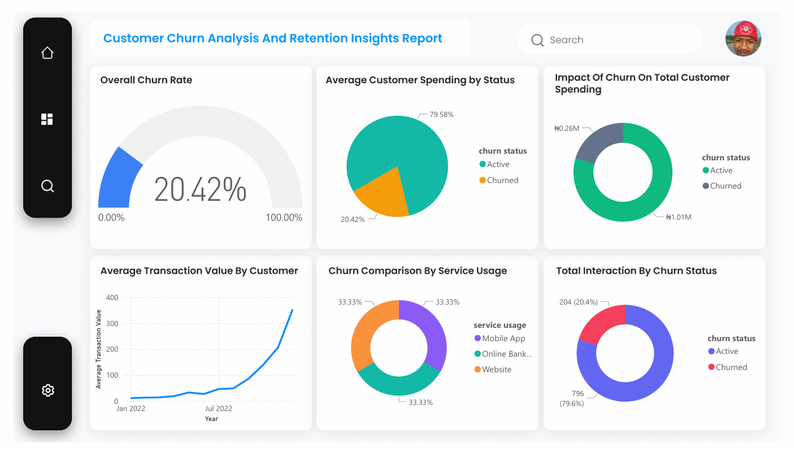

Turning Quiet Losses into Loyal Wins
How behavioral diagnostics and predictive modeling identified the quiet drivers behind 204 churned customers and built a blueprint to protect recurring revenue.
Executive Summary
204 customers churned taking ₦0.26M in revenue with them. But they didn’t leave because of who they were—they left because of how they felt: disengaged, under-served, and unnoticed.
This analysis reveals that churn isn’t driven by income or gender; it’s driven by low interaction and weak platform engagement. The opportunity? Reconnect. By targeting silent users, improving cross-platform experiences, and predicting churn early, the business can turn quiet losses into loyal wins.
The Business Problem
Despite a growing customer base, the business is experiencing a troubling churn rate of 20.4%, resulting in a direct revenue loss of ₦0.26 million. This attrition threatens long-term profitability and customer lifetime value.
The absence of clear, traditional churn drivers—such as income level or gender—made it difficult to target retention efforts effectively. Without a data-driven understanding of why customers leave, the business risks continued erosion of its active user base and revenue potential.
Data & Methodology
I approached this analysis with a structured, four-stage data-driven methodology:
- Data Cleaning & PreparationCorrected missing values, standardized date formats, and ensured numeric data integrity across 1,000 customer records.
- KPI SelectionSegmented metrics across Demographics (Age, Gender, Income), Transactions (Spend, Volume, Average Order Value), and Engagement (Login Frequency, Recency, Service Usage).
- Exploratory Data AnalysisLeveraged column charts, heatmaps, and transactional breakdown ratios to isolate behavioral anomalies.
Dashboard & Visual Analytics
Out of 1,000 customers, 204 churned—resulting in ₦0.26M in lost revenue. Churn was evenly spread across gender and income levels, showing no demographic bias. The real drivers were behavioral:


Key Findings & Insights
The numbers didn’t shout; they whispered. Out of 1,000 customers, 204 quietly exited:
- Engagement was the tipping pointChurned customers barely interacted. Their transaction volumes were low and their digital footprints faint.
- Spending missed opportunities₦0.26M walked out the door with them—representing 20% of total customer lifetime spending.
- Platform usage was flatMobile, web, and online banking performed identically. The issue wasn't where they engaged, but how they felt when they did.
- Seasonal inflection pointsEngagement spiked in January and February, but inactive customers weren't nurtured effectively to sustain long-term retention.
Actionable Recommendations
- 01 / 04Reignite EngagementImplement automated, behavior-triggered outreach for low-interaction customers before silence turns into attrition.
- 02 / 04Elevate Cross-Platform UXStreamline friction points across mobile, web, and online banking touchpoints to build sticky digital habits.
- 03 / 04Incentivize LoyaltyIntroduce targeted perks and seasonal rewards for consistent, long-term activity.
- 04 / 04Deploy Early Warning SignalsBuild predictive churn scoring models based on transaction recency and login drops to enable proactive intervention.
Impact & ROI Projections
- Retention ValueA modest 5% reduction in churn recovers ₦65,000 directly to the bottom line without additional acquisition spend.
- Engagement LiftIncreasing overall user interaction by 10% is projected to drive an annual revenue lift exceeding ₦100,000.
- Predictive InterventionConverting just 20% of identified high-risk churn candidates delivers an estimated 4x return on retention efforts.
Churn didn’t knock loudly; it slipped out the back door. But now we know how it moves.
This analysis uncovered a fundamental truth: customers don’t leave because of who they are—they leave because they don’t feel seen, valued, or engaged. By replacing guesswork with behavioral signals, we can transform churn from a threat into a high-margin growth engine.
Losing customers quietly?
Tell us where you feel the business is slipping. We will reply with what we would look at first.
Work With Our Data Team bloomotive@tbmbrand.com